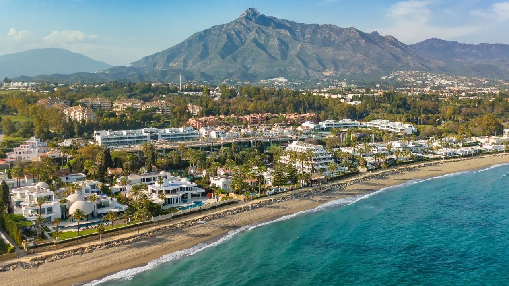
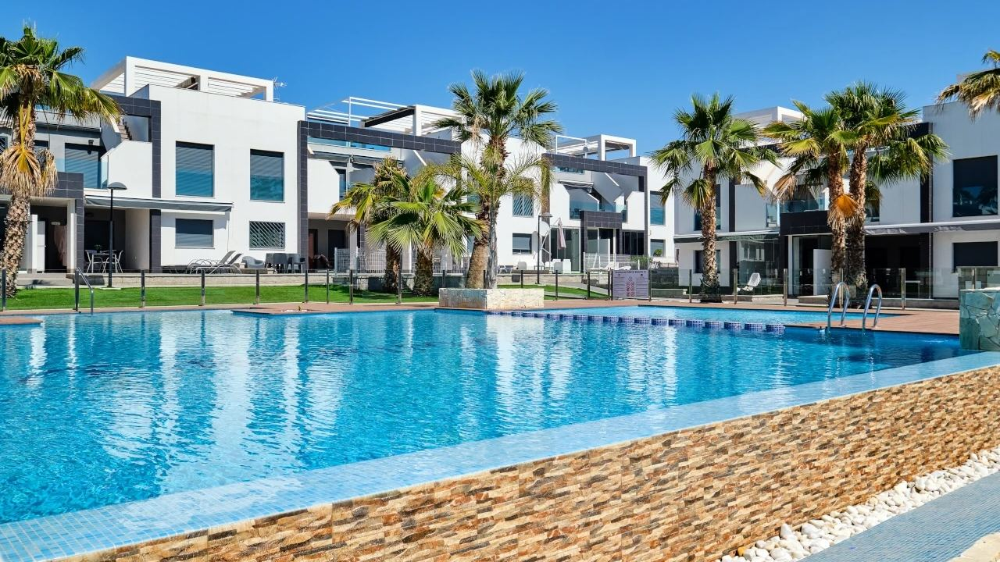
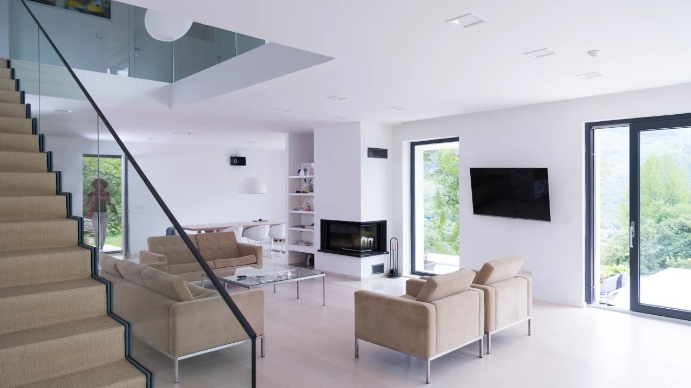
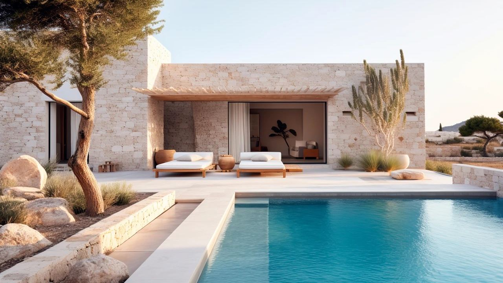
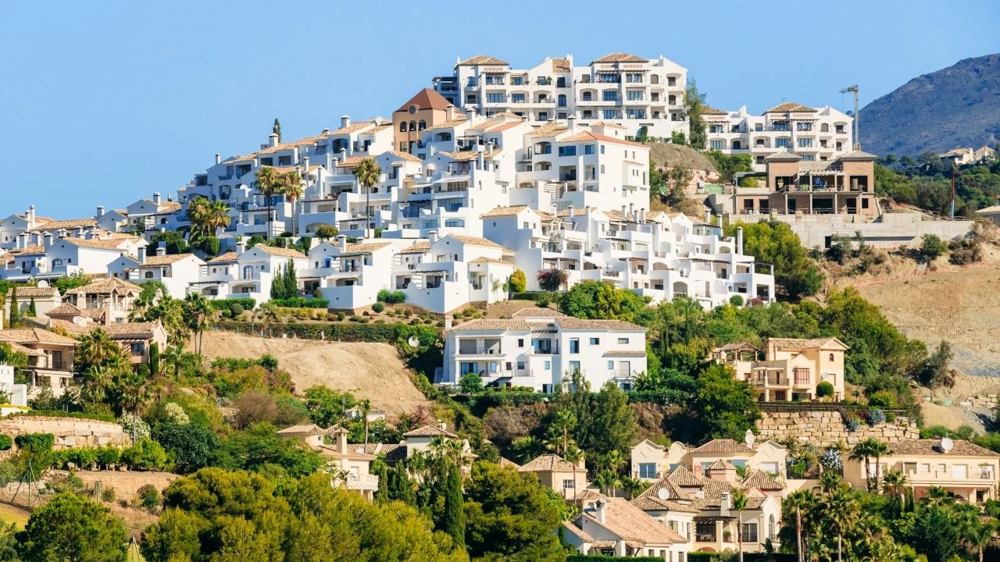
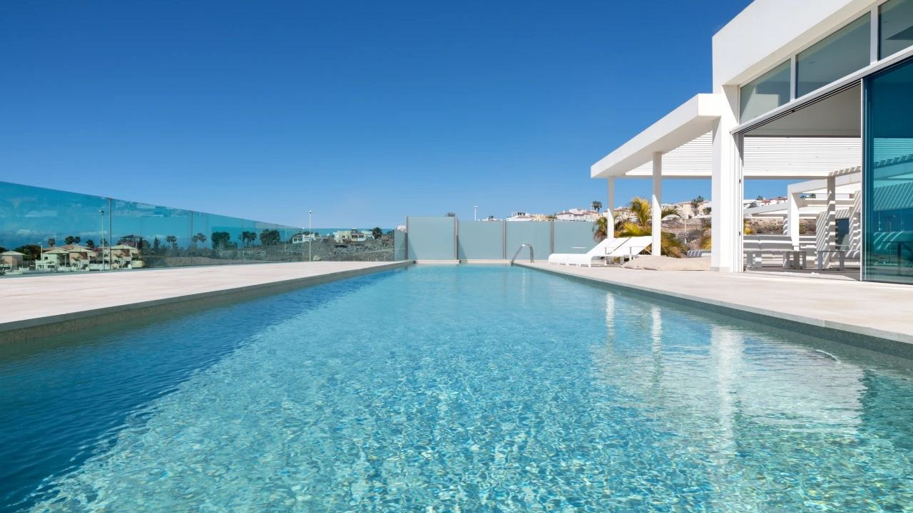

Comprar en España · Mercado
Precio de la vivienda en España 2026: pisos y chalets de lujo
 Por Aleksandra Kobus · · actualizado · 5 min de lectura
Por Aleksandra Kobus · · actualizado · 5 min de lectura

En resumen: En septiembre de 2026 el precio medio de oferta en España era de unos 2.930 € por m² (idealista), casi un 12% más que un año antes. Las diferencias son enormes: Madrid ronda los 6.500 € por m², Málaga capital casi 4.000 €, y muchos municipios de la Costa Blanca están muy por debajo de la media. En la costa aún hay pisos de segunda mano por menos de 250.000 €, los pisos nuevos con vistas al mar suelen costar entre 300.000 y 700.000 €, y los chalets de lujo empiezan en torno a 1 millón y superan con mucho los 5 millones en Marbella. Sume entre un 10 y un 13% de impuestos y gastos al precio.
¿Cuánto cuesta un piso en España? No hay una única respuesta. Con el mismo dinero se compra un piso de tres dormitorios con piscina en Torrevieja o un apartamento de un dormitorio en el centro de Marbella. Aquí tiene las cifras actuales, qué se compra con cada presupuesto y qué factores explican el precio.
Precios medios en 2026
| Lugar | Precio de oferta por m² |
|---|---|
| España, media | 2.930 € (sep. 2026) |
| Madrid capital | 6.458 € (sep. 2026) |
| Barcelona capital | 5.462 € (sep. 2026) |
| Málaga capital | 3.938 € (ago. 2026) |
| Valencia capital | 3.473 € (sep. 2026) |
Fuente: precios de oferta de idealista. Los precios pagados son menores: los registradores anotaron una media de unos 2.429 € por m² en el primer trimestre de 2026. El índice del INE, también basado en compraventas, subió un 12,2% interanual en el segundo trimestre de 2026: la vivienda usada un 12,9% y la nueva un 7,4%.
En la costa, Marbella, Benahavís y las mejores zonas de Jávea y Moraira están muy por encima de la media nacional, y Torrevieja, Orihuela Costa y el interior, muy por debajo.
Qué se compra en la costa con cada presupuesto

Rangos orientativos del mercado en otoño de 2026. Cada vivienda es distinta, así que tómelos como punto de partida.
| Presupuesto | Costa Blanca | Costa del Sol |
|---|---|---|
| Hasta 250.000 € | Pisos de segunda mano de 1–2 dormitorios en Torrevieja, Orihuela Costa, resorts de golf del interior | Pisos pequeños de segunda mano lejos de la playa, sobre todo en Manilva y el interior |
| 250.000 – 500.000 € | Pisos nuevos de 2–3 dormitorios cerca de la playa, adosados, chalets pequeños en el interior | Pisos en Estepona, Mijas, Benalmádena y Manilva |
| 500.000 € – 1 M€ | Pisos y áticos en primera línea o con vistas al mar, chalets en Calpe, Benissa, La Nucía | Áticos y pisos en primera línea, adosados en Marbella |
| 1 – 3 M€ | Chalets con vistas al mar en Jávea, Moraira, Benissa, Cumbre del Sol, Altea | Chalets en Estepona, Benahavís y Marbella Este |
| Más de 3 M€ | Los mejores chalets de Jávea, Moraira y Altea Hills | Milla de Oro, Sierra Blanca, Nueva Andalucía, La Zagaleta |
Al precio hay que sumar aproximadamente un 10–13% de impuestos, notaría, registro y abogado. Nuestra guía sobre cómo comprar en España los detalla.
Qué determina el precio

- Ubicación: el municipio, el barrio y sobre todo la distancia al mar. La primera línea y la playa a pie se pagan claramente más.
- Vistas y orientación: unas vistas abiertas al mar y una terraza orientada al sur pueden subir mucho el precio del mismo piso.
- Obra nueva o segunda mano: la obra nueva suele costar más por m², pero ofrece aislamiento moderno, garantías y menos reparaciones. Vea obra nueva o segunda mano.
- Estado: una vivienda para reformar es más barata, pero la obra cuesta fácilmente desde varios cientos hasta más de mil euros por m².
- Tamaño y distribución: dormitorios con baño propio, una gran terraza o jardín suben el precio más que unos metros extra.
- Zonas comunes: piscinas, jardines, gimnasio, seguridad, garaje y trastero. También encarecen la cuota de comunidad.
- Entorno: golf, puertos deportivos, colegios, un aeropuerto a menos de una hora y municipios con vida todo el año.
¿Cuánto cuesta un chalet de lujo?

En la Costa Blanca, un chalet moderno con piscina y vistas al mar suele empezar en torno a 1 millón de euros en Jávea, Moraira, Benissa o Cumbre del Sol. Parcelas grandes, primera línea o arquitectura de autor llevan el precio a 3–5 millones.
En la Costa del Sol los precios son más altos. Los chalets en Estepona y Benahavís empiezan en torno a 1,5 millones, y en las mejores zonas de Marbella, como Sierra Blanca, la Milla de Oro o La Zagaleta, son habituales precios de 5 a 20 millones o más.
Qué revisar en este segmento lo explicamos en la guía para comprar un chalet de lujo.
Por qué la vivienda en España sigue siendo competitiva

Incluso tras las fuertes subidas, el comprador que llega del norte y el oeste de Europa suele obtener más por su dinero en España que en costas comparables de Francia o Italia, o en las grandes ciudades de su país. Las razones principales:
- Mucha oferta: España construyó mucho en los años 2000 y los precios cayeron con fuerza tras 2008. La costa aún está recuperando esa caída.
- Suelo y construcción: fuera de las grandes ciudades, el suelo y la obra son más baratos que en la mayor parte de Europa occidental.
- Salarios locales: los sueldos en España son más bajos que en el norte de Europa, lo que limita la subida en zonas donde compran sobre todo residentes.
- Competencia: muchos promotores y un gran mercado de segunda mano contienen los precios.
La diferencia se está reduciendo. Los precios han subido en torno a un 12% en el último año y en las mejores zonas de costa apenas queda suelo. Esperar a que bajen no ha compensado en los últimos años.
¿Alquilar o comprar?
Los alquileres en la costa también han subido mucho y cuesta encontrar un buen alquiler de larga duración. Si piensa pasar varios meses al año en España durante muchos años, comprar suele salir más barato que alquilar, y puede alquilar la vivienda cuando no esté. Si aún no sabe dónde quiere vivir, alquilar una temporada es una buena forma de probar la zona. Para cifras de rentabilidad, vea nuestra guía sobre comprar para alquilar.
Preguntas frecuentes
¿Cuánto cuesta un piso en España?
El precio medio de oferta era de unos 2.930 € por m² en septiembre de 2026. En la costa hay pisos de segunda mano por menos de 250.000 €, y los pisos nuevos con vistas al mar suelen costar entre 300.000 y 700.000 €.
¿Cuánto cuesta un chalet de lujo en España?
En la Costa Blanca, los chalets con vistas al mar suelen empezar en torno a 1 millón de euros. En la Costa del Sol, en torno a 1,5 millones, y las mejores direcciones de Marbella alcanzan 5–20 millones o más.
¿Sigue subiendo el precio de la vivienda en España?
Sí. El índice del INE subió un 12,2% interanual en el segundo trimestre de 2026, y los precios de oferta de idealista estaban casi un 12% por encima del año anterior en septiembre de 2026.
¿Qué gastos se suman al precio de compra?
Aproximadamente un 10–13%: ITP o IVA y AJD, notaría, registro y abogado.
¿Dónde está la vivienda de costa más barata?
En el sur de la Costa Blanca, alrededor de Torrevieja y Orihuela Costa, y en el interior.
Precios actuales para su zona

Díganos su presupuesto y la zona que le interesa y le enviaremos ofertas actuales con precios reales, incluidos los gastos adicionales. Contacte con nosotros.
Fuentes: idealista – monthly house price reports · INE – Housing Price Index, Q2 2026 · Colegio de Registradores – property statistics